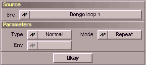

This modulator allows using a sample project as modulation source. Below a list of available
control types :
| variation | description |
|---|
| Normal | If the amplitude of the modulation buffer has reached its
negative maximum then this returns the value 0.0 and at the positive maximum 1.0.
| | Abs | Pretty much the same as 'Normal' with one difference. Sample
data of the value 0 (flat line:) gives you values of 0.0 for the
modulation curve, maximum negative or positive amplitude of the sample a 1.0.
|
| AmpEnv | This shape gives you the volume envelope of the modulating
sample (imagine you stretch a rubber band around the sample)
|
| FrqEnv | This shape returns the pitch envelope of the modulating sample. |
Eventually there are different algorithms available for AmpEnv and FrqEnv . These can then be chosen with
the cycle-gadget labeled "Env".
The sample buffer you want to use for the modulation curve can be of different
length than your to-be-modulated sample. How to handle this is described her :
| variation | description |
|---|
| Single | If the sample is shorter, the rest will be filled with silence. |
| Repeat | If the sample is shorter, it will be repeated for as many times as needed. |
| Stretch | The sample will be stretched/shrinked to fit exactly. |
|